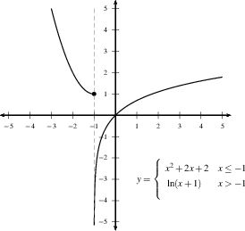

graph LR
A["Is f(a)
defined?"] -->|Yes| B
A -->|No| D{Discontinuous}
B["Does lim_x->a f(x)
exist?"] -->|Yes| C
B -->|No| D
C["Is lim_x->a f(x)
== f(a)?"] -->|Yes| E{Continuous
at 'a'}
C -->|No| D
Calculus I: Foundations
Continuity and the Intermediate Value Theorem
Imron Rosyadi
Calculus I: Foundations
Continuity and the Intermediate Value Theorem
What is Continuity?
An Intuitive Understanding
Imagine drawing a function’s graph without lifting your pencil.
Continuous Function
- No breaks.
- No jumps.
- No holes.
- Smooth transitions.
Discontinuous Function
- Gaps or breaks.
- Sudden jumps.
- “Holes” or missing points.
Tip
Think of it like a smooth road: A continuous function is a road you can drive on without hitting any unexpected cliffs, bridges, or missing sections!
Formal Definition of Continuity at a Point
When is a function continuous at \(x=a\)?
A function \(f(x)\) is continuous at \(a\) if all three conditions below are met:
- \(f(a)\) is defined.
- \(\displaystyle\lim_{x \to a} f(x)\) exists.
- \(\displaystyle\lim_{x \to a} f(x) = f(a)\).
In other words, the left-hand limit, the function value, and the right-hand limit must all be equal: \[ \lim_{x \to a^-} f(x)\qquad=\qquad f(a)\qquad=\qquad\lim_{x \to a^+} f(x) \]
Important
If any of these conditions fail, \(f(x)\) is discontinuous at \(x=a\).
Visualizing Continuity Conditions
How the three conditions fit together logically.
Graphical Interpretation & Your First “DO”
Graphically: Imagine tracing \(f(x)\) with a pencil. To be continuous, you shouldn’t lift your pencil as you pass through \(x=a\).
Your Turn: Sketch \(f(x)=\sqrt x\) and let \(a=4\).
Exercise:
- Find \(f(a)\).
- Find \(\displaystyle\lim_{x\to a^-}f(x)\).
- Find \(\displaystyle\lim_{x\to a^+}f(x)\).
- Is \(f(x)=\sqrt x\) continuous at \(x=a\)?
Think:
- Does \(f(4)\) exist?
- What happens as \(x\) approaches 4 from the left?
- What happens as \(x\) approaches 4 from the right?
- Do these values match \(f(4)\)?
When Continuity Fails: An Example
The case of division by zero.
Consider the function \(f(x) = \frac{x^2-1}{x-1}\).
Question: Where might this function be discontinuous?
Let’s analyze it:
- Domain: \(x \ne 1\). So \(f(1)\) is undefined.
- Simplification: For \(x \ne 1\), \(f(x) = \frac{(x-1)(x+1)}{x-1} = x+1\).
This function has a hole at \(x=1\).
Three Main Types of Discontinuities
Ways a function can fail to be continuous.
1. Jump Discontinuity
- Limits from left and right exist but are not equal.
- A sudden “jump” in the graph.

2. Infinite Discontinuity
- One or both limits approach \(\pm \infty\).
- Often involves vertical asymptotes.

Three Main Types of Discontinuities (cont.)
Ways a function can fail to be continuous.
3. Removable Discontinuity
- Limits from left and right are equal and finite, but \(f(a)\) either:
- Is undefined, OR
- Is defined but equals a different value.
- A “hole” in the graph, which can be “filled” by redefining \(f(a)\).

Removable Discontinuity
Continuity on an Interval
Beyond a single point.
A function \(f\) is continuous on an interval \(I\) if it is continuous at:
- Each interior point of \(I\).
- The left endpoint (if \(I\) has one), it must be continuous from the right: \(\displaystyle \lim_{x \rightarrow a^+} f(x) = f(a)\).
- The right endpoint (if \(I\) has one), it must be continuous from the left: \(\displaystyle \lim_{x \rightarrow a^-} f(x) = f(a)\).
Note
One-sided continuity is essential for discussing continuity at the endpoints of closed or half-open intervals.
Continuity and Piecewise Functions
Checking continuity where the definition changes.
If a function’s definition changes at \(x=a\), we must carefully compare the three continuity conditions at that specific point.
Example: Consider \(f(x) = \begin{cases} 1-x, & x < 0 \\ x^2, & x \ge 0 \end{cases}\)
Let’s check continuity at \(x=0\):
- Left-hand limit: \(\displaystyle\lim_{x \to 0^-} f(x)= \lim_{x \to 0^-} (1-x) = 1\)
- Right-hand limit: \(\displaystyle\lim_{x \to 0^+} f(x) = \lim_{x \to 0^+} (x^2) = 0\)
- Function value: \(f(0) = 0^2 = 0\)
Since \(\displaystyle\lim_{x \to 0^-} f(x) \ne \lim_{x \to 0^+} f(x)\), the limit \(\displaystyle\lim_{x \to 0} f(x)\) does not exist. Therefore, \(f(x)\) is discontinuous at \(x=0\) (a jump discontinuity).
The Intermediate Value Theorem (IVT)
Guaranteering existence of values.
The Intermediate Value Theorem (IVT) states:
Suppose \(f(x)\) is a continuous function on the closed interval \([a,b]\) with \(f(a) \ne f(b)\). If \(N\) is any number between \(f(a)\) and \(f(b)\), then there exists at least one point \(c\) in the open interval \((a,b)\) such that \(f(c)=N\).
In simpler terms:
If you draw a continuous curve from point A to point B, you must pass through every y-value between the y-value of A and the y-value of B.
IVT Application: Proving the Existence of Roots
A powerful tool for complex equations.
We can use the IVT to show that certain equations have solutions or that polynomials have roots.
Example:
Show that \(f(x)=x^4+x-3\) has a root between \(x=-2\) and \(x=0\).
- Check Continuity: \(f(x)\) is a polynomial, so it is continuous everywhere.
- Evaluate Endpoints:
- \(f(-2) = (-2)^4 + (-2) - 3 = 16 - 2 - 3 = 11\)
- \(f(0) = (0)^4 + (0) - 3 = -3\)
- Choose N: We are looking for a root, so \(N=0\).
- Notice that \(f(0) = -3 < 0 < f(-2) = 11\). So \(N=0\) is indeed between \(f(-2)\) and \(f(0)\).
- Conclusion by IVT: Since \(f(x)\) is continuous on the interval \([-2,0]\) and \(0\) is between \(f(-2)\) and \(f(0)\), the Intermediate Value Theorem guarantees there exists at least one \(c \in (-2,0)\) such that \(f(c)=0\).
This means \(f(x)\) has a root in the interval \((-2,0)\).
Tip
We don’t need to find the exact root, just prove its existence!
Case Study: IVT in Action - Temperature Gradient
A practical application in environmental science.
Imagine a sensor measuring ground temperature at 1 meter depth at 9 AM on two consecutive days.
Scenario:
- Day 1 (9 AM): Temperature at 1 meter depth: \(10^\circ C\).
- Day 2 (9 AM): Temperature at 1 meter depth: \(15^\circ C\).
Assume temperature changes continuously over time.
Question: Is it guaranteed that there was a moment between Day 1 and Day 2 when the ground temperature at 1 meter depth was exactly \(12^\circ C\)?
Important
Yes, due to IVT!
- Let \(T(t)\) be the temperature at time \(t\).
- We assume \(T(t)\) is continuous over the time interval.
- \(T(\text{Day 1}) = 10^\circ C\), \(T(\text{Day 2}) = 15^\circ C\).
- \(N = 12^\circ C\) is a value between \(10^\circ C\) and \(15^\circ C\).
- Therefore, by the IVT, there must have been a time \(c\) between Day 1 and Day 2 where \(T(c) = 12^\circ C\).
Practical IVT: Finding Roots Numerically
Using Python (Pyodide) for interval bisection.
While IVT doesn’t give the exact root, it can help narrow down its location. The bisection method is a numerical technique that iteratively uses the IVT.
Let’s use Pyodide to check an interval for a potential root of \(f(x) = x^3 - 2x - 5\).
Properties of Continuous Functions
Building more complex continuous functions.
If \(f\) and \(g\) are both continuous on an interval \(I\), then the following are also continuous on \(I\):
- Sum: \(f(x) + g(x)\).
- Difference: \(f(x) - g(x)\).
- Product: \(f(x) \cdot g(x)\).
- Quotient: \(\frac{f(x)}{g(x)}\), provided \(g(x) \ne 0\) on \(I\).
- Composition: If \(g\) is continuous at \(a\) and \(f\) is continuous at \(g(a)\), then \(f(g(x))\) is continuous at \(a\).
Tip
These properties allow us to determine the continuity of complex functions by examining their simpler, continuous components.
Inherently Continuous Functions
The building blocks of continuity.
The following types of functions are continuous on their respective domains:
- Polynomials: E.g., \(f(x) = x^3 - 5x + 7\).
- Rational Functions: E.g., \(f(x) = \frac{x+1}{x-2}\) (discontinuous only where denominator is zero).
- Root Functions: E.g., \(f(x) = \sqrt{x}\) (continuous on \([0, \infty)\)).
- Trigonometric Functions: E.g., \(\sin(x), \cos(x)\) (continuous everywhere), \(\tan(x)\) (continuous on its domain).
- Inverse Trigonometric Functions: E.g., \(\arcsin(x)\).
- Exponential Functions: E.g., \(e^x, 2^x\).
- Logarithmic Functions: E.g., \(\ln(x), \log_{10}(x)\) (continuous on their domains).
Note
Crucial Implication for Limits: If \(f(x)\) is continuous at \(x=a\), then \(\displaystyle \lim_{x\to a} f(x) = f(a)\). This means for continuous functions, you can find the limit by direct substitution!
Summary & Key Takeaways
- Continuity at a Point: Three conditions must be met: \(f(a)\) defined, limit exists, limit equals \(f(a)\).
- Types of Discontinuities: Jump, Infinite, Removable.
- Continuity on Intervals: Defined for interior points and one-sided at endpoints.
- Piecewise Functions: Check carefully at the “split” points.
- Intermediate Value Theorem (IVT):
- Guarantees the existence of intermediate values for continuous functions on a closed interval.
- Powerful for proving existence of roots/solutions.
- Properties of Continuous Functions: Sums, differences, products, quotients (if denom \(\ne 0\)), and compositions of continuous functions are also continuous.
- Evaluate Limits by Substitution: For continuous functions, \(\lim_{x\to a} f(x) = f(a)\).